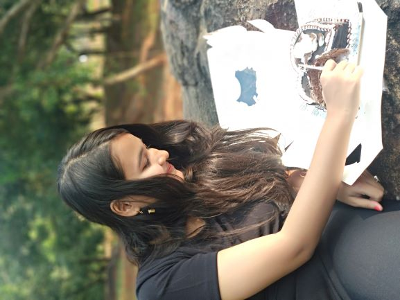
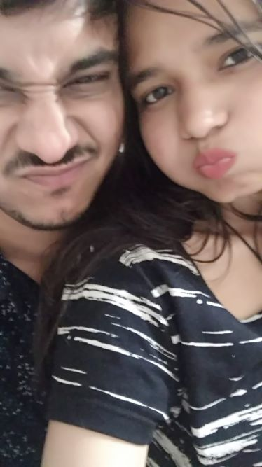
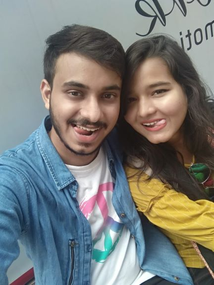
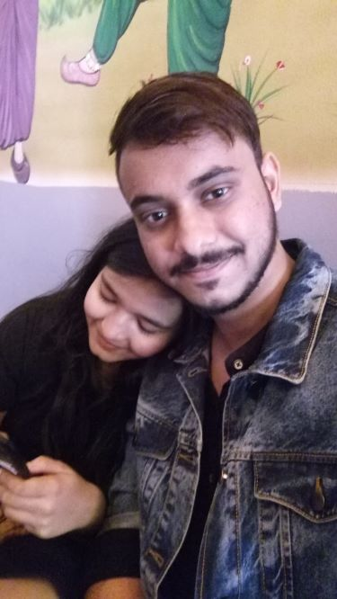

PLEASE TAKE OUT SOME TIME AND DO READ IT.
This is just a letter to you from your kishmish
wo apko achaa lagta hai na koi apko letters de like old day times jaisa.so just think this as a letter.
please raagba nai ki chidhba nai padhiki i request,sabu padhba dhyaan se
|
Mera Bachaa
see this smile of my beta .Dekhiki ma sukoon milsi eei smile tor chua. isnt it of her own. Model lag rhi ho mera beta
Arent she was actually happy at that time, or was it fake my bachaa that smile of yours.
uss time apka life apka nhi tha kya. ya phir maine le liya tha. |
OUR First Meet
Ye me yaad dilane k liye nhi banaa raha beta. Bas what i did i realised. toh ye aise hi.
|
|
The first day we met (12th march naa)😅 bhuli jauche j.and that happiness in our face. |
yaad ache bahut time wait karle apan chua. shake neiki and bahut garam , and sabhe thia heithile and that hug kebhe nai bhuli pare mui.
are ken ken aadu buli buli jaethili j mui b nai jani . he dinar pare tame bahut thar kahela se pach adu jibar k je j nai jae hela.
this pic (hath dhariki galaxia gardens re)and your words , really means a lot to me. and yes whatever i did gonna be change. bas you get well soon bachaa.
he dina movie kana dekhi jaethila ki ummmmm! kartik aryan au kriti sanon r. and yes arvind au taar gf v thile kanje 😀🤣
2nd meet ummmm! bhul gaya april ka 😑
this Name
KISHMISH
yaar sunbar echaa hauche bahut hi jadaa.
3rd meet
haan ye raha pic
umm eta heithila 15th may jen dina mui audition dei jaethili you came with khusi. and abishek pics nauthila
yaad ache mui alga kahake mamu bhabiki tkr nike palei thili , then you said are eeei ade pher ame upar galu
yaar pataa ache mor ajaa k jahake mui blood deithili he was okay after giving 4 pouch blood but aji setanku doctor kahela ki its last stage liver pura damage.(dt-13/06/2020)
takar bhai sonu dada r nijar ajaa se bolangir nu asi nai parbar ki tkr jhia v australia nu asi nai parbar . hafte aghru thik thile and ekhen pata nai ketebele palabe . (kichi nuhe na life chua ketebele ache ketebele naina)
4th meet
13th of july
after 1-2 months bhetla na.
khusi dekhucha duhi jankar , se din maane din thila na gudlu. ajj aise baat nhi karti ho kuch nhi bolti ho rona ataa hai pics dekh kar.
dekho na pics ko kya kabhi aap khus nhi the , kabhi v khud ki khusi nhi mili apko kya. bachaa hum na insaan haar samaye khus hote hein pehele , first khus hote hein then kisi aur ko khus karte hein.
hamesha apko dukh hi diya hai kya maine apko, kabhi khus nhi kiya maine.
i know bohat kuch bolta tha i am sorry
par ye jo the na 6 months those were best days isnt it. hum relation-ship mein the more than that we had our bond as a true friend.
kenta dekhucha yaar pyaar re tame. pata ache you are really the best person in my life.
hei dina duni au kesab daa k v bheti thila and i frst kissed you on that day.(bas kahuche dont be angry na).
14th of july (swagat ra birthday dina)
kebhe bhuli nai pare se dina maane.
hayee mor beta ra smile, sukoon hai tu meri. bataa nhi sakta kaisa laag rha hai. feels like i lost myself somewhere.(nazaar laag jataa hai bachaa sabka)
aur ye apna group wala pic , bohat hi jadaa pasand hai mujhe.
ye wo jaggarnath mandir wala pic hai . yaad hai jaga bhagwan k samne i am like sindoor lagaa doon kya (hahhahaah😆😁😀)
phir hum gaye khaane bohat bhuk laga tha , then phir gaye kailash k room mein , wahan rest kiye.
then phir shaam ko gaye rupa se milne , chocolates le kaar 😍
eta april belar aye jetebele ame bheti nai thae holi ra pic aye tmr. |
5th meet 30th to 31st august taraf
yaad hai na wo oyo dream palace ka days.
chada chua heta kahi nai pare ekhen au raagi jiba nhi ta tame.
but se morning rides and all prabhanjan ra bike re hahaha (😅😁😂😚 kete khus thila mor chua bike chalei ki). those time spends in the room.
bhul kari deli chua bahut baad bhul jaha taha kahiki (ette thar kahi kahi enta kari delina j ekhen tmku mor nu nafrat heigalana{kana kahi parmi chua bas kneeldown heiki sorry})
kneeldown heiki sorry tmr samna re jenta ayei dine karithili hentei kana dhariki sorry beta. maaf kar do chua tme bachaaa k , nijar bhul bujhi paruche mui.
and yes remember arpan v asithila amar sange bhetbar he ayei dina ka
6th meet 20th september na
se book launch day k , yaar se dinar eei sabu pics maane kete mast asiche na chua.
adarsh , sushri, sritam , mahesh , tanmay simun , sabkar snge enjoy karithilu na.
then pher bullet re galu khaebar k se ken mall k (khandagiri aade)ki maane nai padbaar.
kebhe khus nai chahi kaen chua mui tmr , ki kebhe tame khus nai hei kaen nije chua . nijar life nai enjoy kari kaen betu.
eei simle ta real aye na beta amaar
7th meet
13 or 19 october ra aye
se jen kule suili na sukoon milla se park re.
mor beard mast laguthila na chua.
au tamar baare kana kahemi tame ta sabubele hi cute lagsaa
this hug and se jen feel na sabu thakan mitei desi chua . kana eken hnta naina . ekhen sabu change heigala kaen beta.
our first date after so many months , ei dina v ame kiit re tmr sanga ke bhetithila.
se dina lekin ame chai break re khaela and jen hairan tame hela mor gute v bhala pic uthei nai parla j kete knta hauthila
seriously eei sabu days na kebhe wapas nai ase , but tame mor ne thiba bele aame again enta enjoy kari parmaa again and days create kari parma.
november re 8th meet
yaad auche kichi eei place ra , NANDANKANAN pachadar road , he jaga na seriously bhagwaan v sayad banei thila ki ame enta quality time spend karma kahiki.
se raati ka chadi gala bele jen ame jaesu henke and jen rati re jugnu thisan , the moon , the riverside. aint it like fairytail
abb enta laguche ki mehez eei sabu memories sapna thila and mui uthli bele dekhuche kehi nai.
but it was actually us you & me , we together.
januche ame jab tak feel nai krma nijke , ya phir nijke pyaar nai krma then kahake feel nai karei paru ki kahake kari nai paru
I JUST LOVE YOU NIKKI ( cant express how much , kanje ki you literally not in mood of such, but deep down you know tmku v bhal nai laagbar tmku enta)
9th meet dec re 2 thar bheti thila , thare 9th dec , then pher mor chua r birthday re 22dec

kete khus thila mor chua cake katiki , i am so happy that he dina tmr cake katlu pahela ame duhe(mor samna re).
kete kandi thila mor chua se dina , sangaa maane celebrate nai krle j, and then raati mor chua khus heigalaa after surprise.
aji bujhuche se time tmr halat pher v you came with me , mui kahesi bahut aye katha k neiki na haan khrp lagithila
lekin aji jetebele tame naina mor ne bele mui bujhi paruche tame kete khrp bhabithiba se dina , knta laagu thiba se dina tmku
ohh shit mui ta bhuli hi gali se dina jen bike mui neithili literally itna khrp bike tha na 😆😅🤣😀
pheri ka petrol ve sarigala scooty ra hei dina , kana din thila yaar (with my pyaar)( on her day shandaar).
pher again aela and then gala lunch kari punjabi dukane and then galu jaydev vatika
haaaye mor jaan (mor dodi), he dina frst dekhli na yaar kahi nai pare , mor maal au tui and sabubele mor hi rahebu , srsly i dont wanna loose you😶😔
I LOVE YOU DAMN SO MUCH , AND MISS YOU TOO
10th meet jan19-jan20
se images nai paebar mui , if thiba delete nai kari thiba bele pathaba ta chua.
remember mui ramp walk lagir jaethili , group neiki and that day ame dance krlu sabkar samna re. bekhayali song re. first time tmr sange dance karli yaar seta v
then jan 20th re again buli gala , arprit ra rap suni suni tempo re.
buddha park re jen 10mins nap tmr kula re , i just want ki hnta sue tmr snge again tmr kula re munda rakhiki.
11th meeet and last thila 29th of feb

I just hope ki eei day amar last nai thau chua. and i know nai hue last se day , we will make memories (and mate mor chua sange puri v ta jibar ache na )
eei dina mui kete chidhi jaethili yaar , khara lagir.
and jen tame kahela ki jima hee ade buli , kaas tike taki pakeiki jaethiti mor chua r surprise dekhithiti.😶😑
then room galu and sene jen kecher kecher heuthila, se prblm lagir theen mor chua khana magei thila khaela and suila.
setebele jen khana nei gala na and mui tensed thili hetebele jen hug te dei thila na tame se sukoon ta zindagi re kehni na pai nai pari.
hahaha 😃 mui tmr chuti banauthili banei nai hau thae , tmr silkie silkie hairs lagir.
phir ame baharla and then nandankanan pachadar road k gala. henu pher mui mor chua k chadi aeli
sunno bike re aela bele na jebhe v chadi ki ase tmku kandi pakasi aji tak seta mui express nai kari pari.
bahut yaad auche chua , its not like ki mui ekla rahi nai pare and enta janiki krli tmr snge.
listen chua i apologize ethir lagir nai ki mui bhul karli , etar lagir ki i do realize
i realized how much you loved me , how much you put your efforts to keep this relationship or this bond safe & strong
compromises khali mui ekla nai kari , tame v karicha ,bahut karicha , ette maas tak sahela mui jaha b kahe tmku , sabubele ragiki kahi base.
kichi nai kahe mor chua , ghaye 2 thar raagla , kahela v bahut kichi like mui jalil krsi and all.
i know what i did and sabu ta mate eka tharke thi baharuche ekhen,
i just wanna say 1 thing mui kebhe tmku enta chadi demi ya enta dstnce heijiba nai bhabi thae , its literally killing me from inside
and i know tmku v bhal nai laagbr enta , kaas mui jaeti tmr nike and maad khaeti bhal se bhale but sabu thik kari kina again (relationship re thaeiki se friendship and bond share karta duhe)
chua mui maafi manguche tmr nu just etar lagir nai ki mor glti ache , but realize krli ki mui kana hei jaethili and knta thili.
involvement ya insequrities bali nai , mui ette v insequrites nai diye chua , deti bele kehni pila sanga sange tame photo uthata hath rkhiki ya phir bele v kaheti
but mui kebhe nai kahi knje ki mui januche heta kahebar blkl b bhal nuhe
au na hi past k dhariki basbar ta thk aye
past sabkar khrp thisi tmr v thila mor v thila , and jadi tame accept karucha then i too should accept
MUI INSAAN KHARAP NUHE KI MUI KAHAR KEBHE KHARAP NAI KARI CHUA , BAS MOR RAGGA ETE HEIJAETHILA NA MUI SETAKE NAI BUJHI PARLI J MUI KANA KAHUCHE AND SAMNA WALA K KnA LAAGBA

mast lagsu na ame 6 ta jaka with together.
KNEEL DOWN HEIKI SORRY TMKU BETA , BAHUT bhul kariche and bahut thar kariche ragiki
laagsi kathaa heti tmr sange like hors and hours
but trust me se hafte thi na mui realize kari pakali kna mui karuthili i wont be doing it kebhe v nai
hippo🦠suno na tmr chuchia ğŸ¥tmku srsly bahut bhal paesi and tame v tmr chuchia k bahut bhal paesa ekhen ragicha tame
please talk to me mor upre ragaa barsei diya mari paka , but enti nai kari kebhe
mama v kahesan that haan sabu thik heijiba , i have printed in my subconcious mind that yes sabu thik heba again ame jnta thilu hentei jima
but then kebhe kebhe i fail to thnk so
laagsi ki kana au snta pyaar nai kare mor chua
but i know mor chua kete pyaar krsi mate.
bas na beta i am sorry na for what i did(bas i need you the way you were with me before).
enta nai ki pagal lekhe beta beta bachaa bacha hauche . but i really want you to be with me here
lockdown ache ghare achu and bhal se ktha lagi nai parbar.
I OWE YOU GUDLU , AND I LOVE YOU THE MOST
i know tame thik heigalana but ebe v ragicha tike , sab thik heijiba dine and ame again bulma bahut enjoy karma.
kichi bhal nai laagbar yaar , idk why
nai jani au kna kahemi
baas yaad ata hai tera 😠, aur wo days.
bhetbar echaa hesi tmr sange
hau heigala au besi kichi nai leave all those things

janli nai kana krmi knta krmi so bas eta gute letter in form of website baneiki tmku patheiche
ethu mor practice v heigala and mor chua k a type of letter v mili gala
kas bheti parti tmr snge
please raagba nai chidhba nai sabu padhiki
I LOVE YOU HAMESHA AND TILL ETERNITY, AND WITH YOU ALWAYS
BUT please relationship bhangbaar nai bhabbaa , that isnt the solution
jadi tame hamesha fight back krla mor brk up brkup kahela bele ki nai brkup isnt the solution , mui v nai chahe rltnshp bhangu ki bond bhangu
bas tike kami jaeiche se bond , but khtm nnai hei dau duhe.
mui bas chahesi ki ame again jnta thilu senta rahu , knje ki if i cant be your friend then kichi nuhe so sabunu besi imprtnt aye ki RELATIONSHIP thau seta ache seta mui kebhe
nai bhangbar k chahe kichi v hei jau but relationship re rahiki we will share that bond , that trust , that love (jaise pehele 6 mnths the)(baki couples jaise v rahenge couple ki tarah par khud ko samjhenge
dono ko time denge khud ko v time denge
se frst 3 months wala lekhe uncondtional love
se love jenta tame mate bas dekha mui tmr pakhe sui thila bele and mui tmku dekhe tame suithila bele and feel kare kichi ktha nai kichi nai bas dekhu thau duhe duhiku bike re basi thila bele tame jen dhari thao mate se feeling kehni na nai mile mate
dekha mor askatian k kenta danta dekhauche 😅🤣 , mor hippo
haye mor gudlu ❤💙💜🧡💓
yaad ache eei pic tame edit kariki deithila 26 or 27th feb 2019 k sayad
ohh se khusi jen thila amar duhi jankar seta yaad karle sabu bhuli jaesi yaar
those days were best days , isn't it beta
|
hahaha bilei mor . btw you are so cute beta.
those night video calls and sentei suijauthila mui bas tmr breathe sunuthisi (peace)

SALA ghaeta tor (thakdi kenar , aetka sikhit bhaabsi na bo dekh ta)

this shoulder is always with you till eternity zindagi bhar raheba ki tame mud rakhiki enta phone chalei paraa 🤣😆(pj)
I mean sabubele mor shoulder ache tmr mud k rest debar lagir 😍😊💙❤💓(whole life)
I LOVE YOU AND WILL ALWAYS DO ZINDAGI BHAR. and yes bhal se padhiki bhal job kariki ghare maneiki mast rahema sabkar sange❤💚❣
mate kichi bujhi nai aela knta kana feel karami tmku ta i did this. hope you ll like it.
bas eta aye ki kebhe bhetmi tamku and hug te krmi tight sa [pura]
chua I am always with you whatever be the reason , tame jaha kahela ki besi close nai asu mate tmr jagaa re rakhiki i saw and hnta mui kare v nai
but haan kulla re sui , buli bahut , enjoy kari , sabubele thiba chua mor snge , bas kabhi give-up nai karu duhe thats it (baki sabu thik heba mor sherni dont worry)